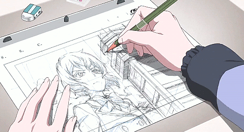

Procesos para hacer un dibujo
- Tener todos los materiales necesiarios para crear tu dibujo como:Lapiz, borrador, hoja, regla, creatividad y muchas cosas más.
- Escoger alguna fuente de inspiración, alguna idea que tengas en mente, un sentimiento, una imagen e imaginación.
- Una vez en mente con la idea, pasamos a hacer un boceto.
- Terminamos nuestro boceto, pero esto no termina aquí, ahora pasamos a repisar nuestro boceto con las lineas finales.
- Luego de haber borrado las lineas del boceto, comenzamos a pintar nuestro dibujo y a darle color.
- Concluimos con los últimos detalles y ya terminamos nuestro dibujo
